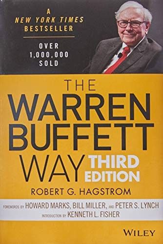

罗伯特·哈格斯特朗（Robert G. Hagstrom）是美国著名的基金经理与投资作家，曾长期任职于Legg Mason Capital Management，专注于价值投资策略的研究与实践。《沃伦·巴菲特之道》初版于1994年，由约翰·威利出版社发行，出版后在《纽约时报》非虚构类畅销榜停留了整整二十一周，累计销量逾百万册，成为20世纪末英语世界最畅销的投资书籍之一。此后哈格斯特朗对全书进行了两次大幅修订——2004年推出第二版，2013年推出第三版，将巴菲特数十年投资实践中的新案例和新思想悉数纳入，2024年又推出了三十周年纪念版。此书是第一部系统梳理巴菲特投资哲学与决策方法论的著作，开创了"巴菲特研究"这一出版品类。
全书的核心贡献在于，哈格斯特朗首次将巴菲特散见于股东信、访谈与年会问答中的投资原则，归纳为一套可操作的分析框架，并辅以具体的投资案例加以阐释。这套框架涵盖四个维度：商业原则（企业是否简单易懂、是否具有稳定的经营历史、是否有良好的长期前景）；管理层原则（管理层是否理性配置资本、是否坦诚对待股东、是否能抵御机构强制力的侵蚀）；财务原则（关注股本回报率而非每股盈利、计算真实"股东盈余"、寻找具有高利润率的企业）；市场价值原则（确定企业的内在价值、确保以折价买入、理解市场先生的情绪本质）。书中对巴菲特早年投资可口可乐、华盛顿邮报、吉列、盖可保险、美国运通等重大案例的逐一拆解，至今仍是价值投资教育中最经常被引用的教学素材。
沃伦·巴菲特本人虽然一贯低调，从不主动推荐分析自己的书籍，但他曾多次在公开场合和股东信中对哈格斯特朗的研究工作给予积极评价，认为其对自己投资哲学的归纳相当准确。彼得·林奇（Peter Lynch）为本书撰写了序言，称其为"研究股市中最成功投资者的一次绝佳机会"。霍华德·马克斯（Howard Marks）亦在书中的推荐文字中写道，哈格斯特朗的分析框架帮助投资者理解了为什么坚守能力圈、安全边际与长期视角能够创造可持续的超额回报。该书的第三版新增了行为金融学与心理学对投资决策的影响部分，与芒格所倡导的心理偏差清单形成了有益的呼应。
对于正在构建投资知识体系的读者而言，《沃伦·巴菲特之道》的价值在于它的系统性与可操作性。巴菲特的智慧在各种采访、演讲和年会问答中大量散布，但没有经过系统整理的读者很难从中提炼出一套可供实践的方法论。哈格斯特朗做的恰恰是这件事——他将一位投资天才数十年的思想结晶，整理成一本普通投资者可以按图索骥的手册。这本书并不告诉你买什么股票，而是告诉你如何思考一家企业、如何评估管理层、如何在市场先生情绪最混乱的时候保持理性。这种思维方式，无论市场如何变迁，都不会过时。